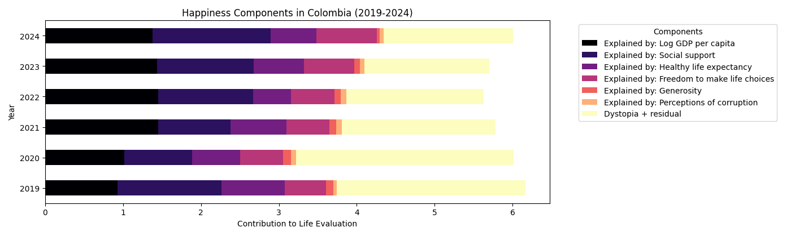
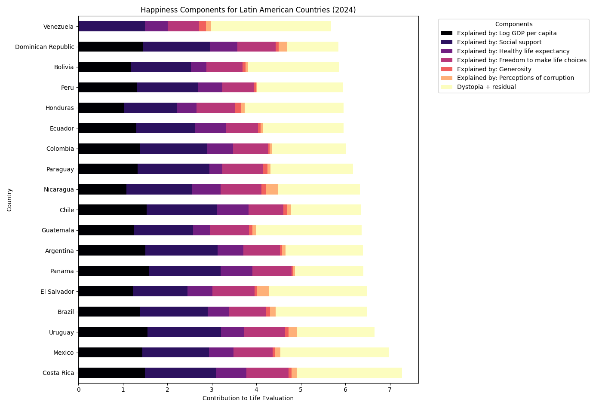

Análisis Académico del Índice de Felicidad
1. Evolución del Puntaje de Felicidad en Colombia (2011-2024)

Esta gráfica muestra la evolución del puntaje promedio de evaluación de vida en Colombia durante el período 2011-2024.
Se observa un crecimiento sostenido entre 2011 y 2015, alcanzando su punto máximo cercano a 6.5.
Posteriormente, se presenta una tendencia descendente progresiva, especialmente marcada entre 2020 y 2022,
periodo en el cual el índice cae hasta aproximadamente 5.6.
En 2023 y 2024 se aprecia una recuperación moderada.
Este comportamiento evidencia una etapa de estabilidad inicial, seguida de un deterioro significativo y una posterior fase de recuperación parcial.
2. Componentes de la Felicidad en Colombia (2019-2024)

La gráfica descompone el puntaje total en factores explicativos:
PIB per cápita, apoyo social, esperanza de vida saludable,
libertad para tomar decisiones, generosidad,
percepción de corrupción y el componente residual.
Se observa que el apoyo social y el PIB constituyen los pilares fundamentales del puntaje colombiano.
Durante 2020-2022 se evidencia una reducción general en casi todos los componentes,
especialmente en libertad y percepción de estabilidad,
lo cual explica la caída observada en la gráfica anterior.
En 2024 se aprecia una leve recuperación estructural.
3. Comparación Latinoamericana (2024)

En el contexto latinoamericano, Costa Rica lidera la región,
superando los 7 puntos totales. México, Uruguay y Panamá
también presentan niveles elevados.
Colombia se sitúa en una posición intermedia,
por encima de países como Venezuela y Bolivia,
pero por debajo de economías regionales más consolidadas.
La diferencia principal radica en los niveles de apoyo social y PIB,
así como en la percepción de corrupción.
4. Comparación: Portugal, Colombia y Ecuador (2024)

Portugal presenta un puntaje ligeramente superior al de Colombia,
principalmente por mayor estabilidad económica y percepción institucional.
Colombia supera levemente a Ecuador en apoyo social,
aunque ambos presentan estructuras similares.
El componente residual es significativo en los tres países,
indicando factores culturales y contextuales no capturados directamente por las variables económicas.
5. Los 3 Países Más Felices del Mundo (2024)

Finlandia, Dinamarca e Islandia lideran el ranking mundial.
Estos países combinan altos niveles de PIB,
sólido apoyo social, baja percepción de corrupción
y altos estándares de salud.
En comparación con Colombia,
la diferencia principal radica en la fortaleza institucional
y la estabilidad socioeconómica.